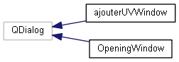
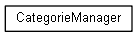
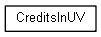
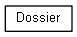
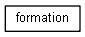
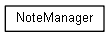
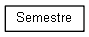
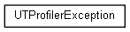
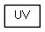
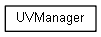

UTProfiler
Page principale
Espaces de nommage
Classes
Fichiers
Liste des classes
Index des classes
Hiérarchie des classes
Membres de classe
Tout
Classes
Espaces de nommage
Fichiers
Fonctions
Variables
Énumérations
Valeurs énumérées
Amis
Hiérarchie des classes
Aller à la hiérarchie des classes en mode texte










Généré le Dimanche 15 Juin 2014 17:19:22 pour UTProfiler par
1.8.7


 1.8.7
1.8.7